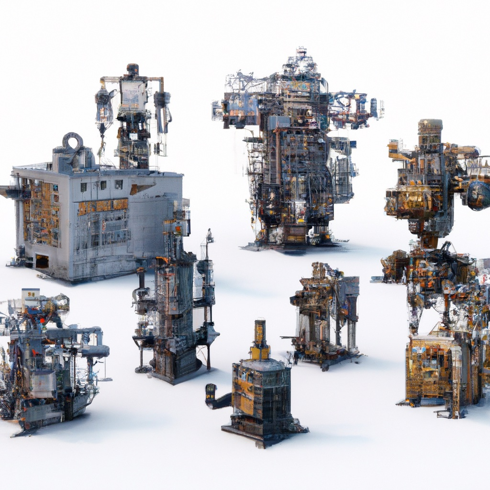

4.6. Some System Identification#

We can “learn” measurement and motion models.
{kind=link}
In this section, we will limit ourselves to learning linear conditional Gaussians from data. In Section 4.1, we discussed three different ways to represent densities over a two dimensional state \(x\in\mathbb{R}^2\): Gaussian densities, finite element approximations, and samples. In Section 4.4 we presented three different Bayes filters stemming from each of these choices. However, in each case the motion model was the same: a conditional Gaussian where the mean was a linear function of the previous state. In this section we will investigate whether we can learn both the linear mapping as well as the noise parameters, from data.
4.6.1. Maximum Likelihood Parameter Estimation#
Let us first consider a one dimensional system (i.e., \(x_k \in \mathbb{R}\) is a scalar), and a sensor model that is linear with additive Gaussian noise:
Here, \(n_k\) denotes zero-mean, Gaussian noise with covariance \(R\).
In the one dimensional case, both \(C\) and \(R=\sigma^2\) are scalars, and estimating them will be similar to the Gaussian parameter estimation from Section 2.6. Remember that there we estimated a sample mean \(\hat{\mu}\) from a set of \(N\) data points, by simply computing the average of the data values:
The underlying reason is that this minimizes the negative log likelihood (nll) of \(\mu\) given the data \(X\) by
hence this is a maximum likelihood (ML) estimator of \(\mu\).
Suppose we are given a set of ground truth values \(\{x_k\}\) for the state along with corresponding measurement values \(\{z_k\}\). If we generalize the scheme from Chapter 2, the negative log likelihood of \(C\) given the data for our measurement model becomes
Taking the derivative with respect to \(C\) and setting to zero we have
yielding
Fitting the variance then be done using
4.6.2. ML Code Example#
Consider a one dimensional version of the warehouse problem in which the robot moves only along the \(x\) axis. Let us simulate some states randomly from the \(x\) direction in the warehouse, i.e., between 0 and 100 meters, and then the measurement \(z\) from those sampled \(x\) coordinates, and then plot them against each other:
#| caption: Plot of location versus measured location.
#| label: fig:location_vs_measured_location
C = 100 # scaling from meters to centimeters
R = 30**2 # 30 centimeter standard deviation
N = 200 # number of samples
X = rng.uniform(low=0, high=100, size=N) # warehouse length
Z = rng.normal(C*X, np.sqrt(R))
px.scatter(x=X, y=Z)
It is pretty clear that the slope is 100. Can our math corroborate?
estimated_C = np.sum(X*Z) / np.sum(X*X)
print(f"estimated C = {estimated_C} (cm/m)")
estimated C = 100.04450962851038 (cm/m)
Pretty close! The variance and standard deviation are likewise well estimated:
estimated_R = np.sum(np.square(estimated_C*X-Z))/(N-1)
print(f"estimated R={estimated_R} (cm^2), stddev={np.sqrt(estimated_R)} (cm)")
estimated R=880.3803332903113 (cm^2), stddev=29.671203772181393 (cm)
4.6.3. Extending to multi-dimensional systems#
For multi-dimensional systems, if the undertainties for the various dimensions are independent, we can solve the parameter estimation problems independently.
In the warehouse example, for the GPS-like sensor, we assumed that the \(x\) and \(y\) were measured directly and that the noise on them was uncorrelated, and that the noise for each dimension had variance \(\sigma^2\). When this assumption holds, the parameter estimation problem is to estimate the independent 1D scaling factors \(C_x\) and \(C_y\), and the scalar variance \(\sigma^2\) We can use the code above to do so for \(x\) and \(y\) independently.
4.6.4. Multivariate Linear Regression#
For more general measurement processes or motion models, we typically need heavier machinery. The scalar case above is an instance of linear regression, and it can be generalized to the multivariate case. Let us assume a multivariate linear measurement model
where now \(z_k\in\mathbb{R}^m\), \(x_k\in\mathbb{R}^n\), and \(H\) an \(m \times n\) matrix. Again, \(n_k\) is assumed zero mean Gaussian, with covariance matrix \(R\).
The negative log likelihood of \(H\) given the data for our measurement model is
Unfortunately, the estimation process for arbitrary \(R\) is out of scope for this text. But if we assume isotropic noise with covariance matrix \(I \sigma^2\), then the optimization problem simplifies to
where \(H_i\) is the \(i^th\) row of \(H\). Making use of the fact that the scalar \(H_i x_k\) can be re-written as \(x_k^T H_i^T\), and then setting the derivative with respect to \(H_i^T\) to zero we have, for all \(i\):
yielding the following expression for the \(i^{th}\) row of \(H\):
Note the resemblance with the scalar case, but be mindful that the quantity in parentheses is an \(n\times n\) matrix whose inverse will exist only if its rank is equal to the dimensionality of the system, \(n\). This rank condition is farily easy to satisfy, and is essentially a requirement that the data set be sufficiently rich. It is interesting to note that the \(i^{th}\) row of \(\hat{H}\) is formed as sum of the input vectors \(x_k\), weighted by the \(i^{th}\) element of the measurement. Finally, we can collect the above for all \(i\) and write:
After this, we can again recover the variance \(\sigma^2\) by
in which \(N\) is the number of data points. Above we would divide by \(m N\) as that is how many elements there are in the double sum. However, to get an unbiased estimate we need to subtract \(mn\) from the denominator as that is how many entries we already estimated with \(H\).
4.6.5. Multivariate ML Code Example#
Let us simulate some 2D states randomly in the warehouse, and multiply with a random \(3\times 2\) \(H\) matrix:
H = np.array([[10,20],[30,40],[50,60]]) # scaling from meters to centimeters
R = 30**2 # 30 centimeter standard deviation
N = 200 # number of samples
X = rng.uniform(low=[0,0], high=[100,50], size=(N,2)).T # warehouse dimensions
Z = rng.normal(H @ X, np.sqrt(R))
The multivariate estimator:
H_transpose = np.linalg.inv(X @ X.T) @ (X @ Z.T)
H_optimal = H_transpose.T
print(f"H_optimal=\n{np.round(H_optimal,2)}")
H_optimal=
[[ 9.88 20.18]
[30.03 40. ]
[49.96 59.94]]
Pretty close! And the estimate for the standard deviation:
np.sqrt(np.sum(np.square(H_optimal @ X - Z))/(3*N-6))
30.686358139314535
4.6.6. Application: Motion Model Estimation#
Linear regression can be used to estimate all of the parameters of a general linear motion model.
Assuming we have a dataset of triplets \(x_k, u_k, x_{k+1}\), i.e., the current state \(x_k\in\mathbb{R}^n\), the control \(u_k\in\mathbb{R}^p\), and the next state \(x_{k+1}\in\mathbb{R}^n\). Note the similarities with the reinforcement learning setup in Section 3.6! If we assume a linear process model then we should have:
where typically the covariance on the process noise \(w_k\) is denoted as \(Q\). We only have to note that we can write this in the form needed by the multivariate ML estimator, as
Again, we generate some random states, controls, and next states:
N = 500 # number of samples
X = rng.uniform(low=[0,0], high=[100,50], size=(N,2)).T # states
U = rng.normal(scale=5, size=(N,2)).T # controls, zero mean, 5m standard deviation
A = np.eye(2)
B = np.eye(2)
R = 4 # 2 meter standard deviation
Z = rng.normal(A @ X + B @ U, np.sqrt(R)) # the next state
The multivariate estimator:
XU = np.vstack([X,U])
XU.shape
(4, 500)
AB_transpose = np.linalg.inv(XU @ XU.T) @ (XU @ Z.T)
AB_optimal = AB_transpose.T
A_optimal, B_optimal = AB_optimal[:,:2], AB_optimal[:,2:]
print(f"A_optimal=\n{np.round(A_optimal,2)}")
print(f"B_optimal=\n{np.round(B_optimal,2)}")
A_optimal=
[[ 1. -0.]
[ 0. 1.]]
B_optimal=
[[ 1.01 -0.01]
[-0.01 1. ]]
Pretty close! And the estimate for the standard deviation (note the changed denominator!):
np.sqrt(np.sum(np.square(AB_optimal @ XU - Z))/(2*N-8))
1.994820602112946
4.6.7. Expectation Maximization#
We can estimate unknown parameters even if we don’t have access to ground truth state values.
The above assumed that we had perfect knowledge of the state \(x_k\) at all times. But what if we only had access to the controls \(U\) and measurements \(Z\)? A natural idea is to try and estimate the states with the techniques from Section 4.4, and then somehow use the posterior density \(p(X|U,Z)\) to estimate any unknown parameters \(\Theta\). However, the estimation problem itself uses the parameters, so we have a chicken and egg problem!
The expectation-maximization or EM algorithm is an algorithm that allows us to estimate measurement and motion models even when the state is only observed from measurements. We do need some initial estimate \(\Theta^1\) for the parameters \(\Theta\), and the idea is to then alternate between two steps:
E-step: calculate the density \(p(X|U,Z;\Theta^t)\) on hidden states \(X\), given the guess \(\Theta^t\).
M-Step: maximize the expected log-likelihood with respect to \(\Theta^{t+1}\) under this density.
We do not discuss the detailed derivations here, but we do want to mention that a particularly simple variant of EM is to use a particle filter in the E-step. We can then simply “pretend” that the samples form a large dataset, and perform the above estimation procedures in the M-step. This is an instance of a so-called Monte Carlo EM algorithm, and the amazing fact is that this then actually converges to an ML estimate for the unknown parameters \(\Theta\).